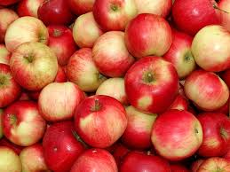

The English language follows the Subject-Verb-Object (SVO) grammar order. For example, think “She (subject) loves (verb) apples (object).”
Now, the Korean language follows the Subject-Object- Verb (SOV) grammar structure, and is also classified as a “verb-final” language because all sentences must end in a verb.
In this lesson, we will cover the basic sentence structure “(pronoun) am/are (noun).” Taking the example of the girl loving apples, if we were to translate the sentence to Korean, the literal word order would look like: “She (subject) apples (object) love(verb).”
In the previous page , you were introduced to very basic pronoun 나는=I (casual) in the vocabulary. Actually, the real dictionary definition of I(casual) is just “나” without the “는”. “는” is actually a topic marker which is introduced the next lesson. However because 나 isn’t as commonly used as 나는, we will just use 나는 for practicality purposes.
Below is a simple Korean sentence, meaning “I am a Korean person”. Can you try to pronounce it?
나는 한국 사람 입니다.
Now, let’s dissect this sentence:
I 는 Korean person 입니다.
I (subject) + (topic marker Grammar 2) + Korean person (nationality object) + 입니다 (verb).
나 means “me” or “I”. To further break down the rest of the sentence, -는 is a marker that indicates the topic of the sentence, and –입니다 is a verb, meaning “to be.”
This is a basic sentence in Korean. It contains a topic, a marker for the topic, a noun, and a verb. We will make more complex sentences later on, but for now, just understand these parts of the sentence.
Example 2: can you guess the definition of this sentence?
나는 학생 입니다.
나는=“I”, 학생=student, -입니다=“to be”. = “I am a student.”
Are you beginning to understand the basic sentence structure? Try inserting different nouns you learned in the previous Vocabulary lists in the blanks of the sentence template below:
| 나는___ 입니다 | = | “Na-neun___imnida” | = | I am (a) ____ (casual pronoun) |
|---|---|---|---|---|
| 저는___입니다 | = | “Jeo-neun___imnida” | = | I am (a) ____(polite pronoun) |
| 너는___입니다 | = | “Neo-neun___imnida” | = | You are (a) ____(casual pronoun) |
| 당신은 ___입니다 | = | “Dangsin-eun___imnida” | = | You are (a) ____(polite pronoun) |
You can even use this structure to introduce your name!
나는 (name) 입니다 .
Example: 나는 마크입니다 = I am Mark.
CULTURE NOTE: As for the pronouns, casual pronouns are used with your family, friends, classmates, and generally people the same age as you. Polite (or more formal) pronouns are used at work, for superiors, and generally anytime you want to show respect to who you talk to. In Korea, hierarchy is deeply imbedded in the roots of culture and language, which is something not seen in the English language.
If you accidentally address your superior with a casual pronoun, don’t worry--they most likely will understand that you are just a beginner and learning the ins and outs of this new system of pronouns!